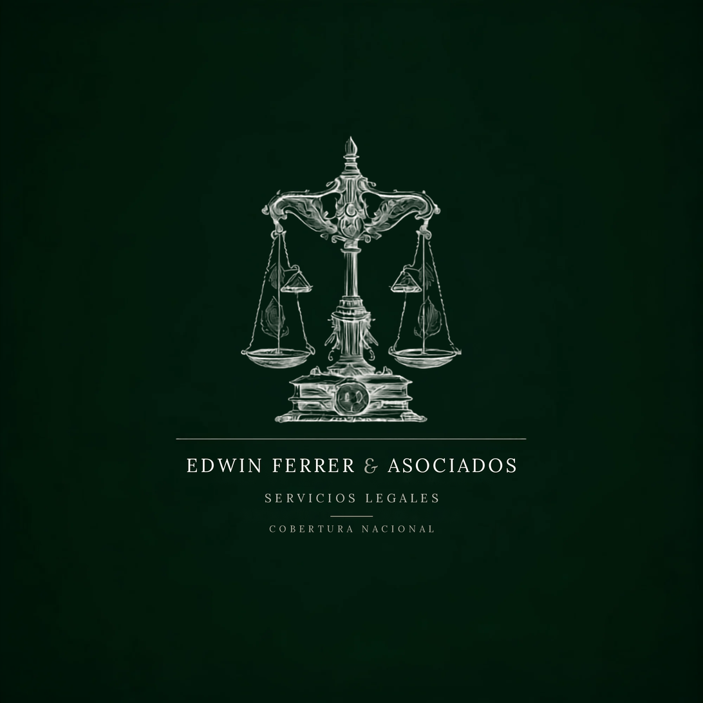

Dr. Edwin Ferrer ← Volver al sitioCalculadoras y recursos para entender su caso con números y fechas claras. Cada herramienta cita la norma y la jurisprudencia en que se basa.
Ingrese sus datos y obtenga el resultado al instante, con el paso a paso del cálculo.
Tiempo descontado con la redención de 2 días por cada 3 de trabajo, estudio o enseñanza, y fechas para la domiciliaria, la libertad condicional y la pena cumplida.
CalcularHasta cuándo tiene el juez para fallar, hasta cuándo puede impugnar, cuándo debe cumplirse la orden y cuánto puede durar el desacato, en días hábiles.
CalcularCesantías, intereses, prima, vacaciones e indemnización, con el salario mínimo y el auxilio de transporte de cada año.
CalcularValor actualizado de la cuota con el reajuste anual por IPC y cálculo de las cuotas atrasadas con sus intereses.
CalcularDocumentos, preguntas y orientación para dar el primer paso.
Genere su derecho de petición en el navegador, listo para presentar. Sus datos no se guardan.
AbrirEnvíe su pregunta jurídica general y consulte las preguntas ya respondidas.
AbrirTarifas de referencia para servicios jurídicos, como orientación antes de contratar.
Abrir